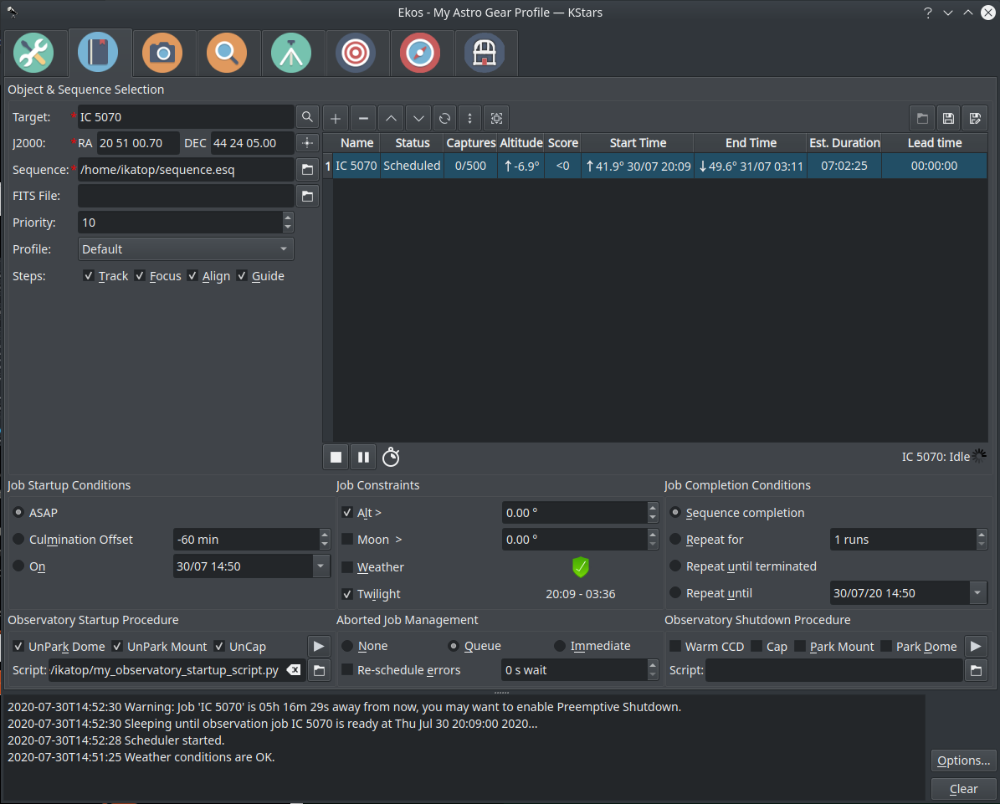
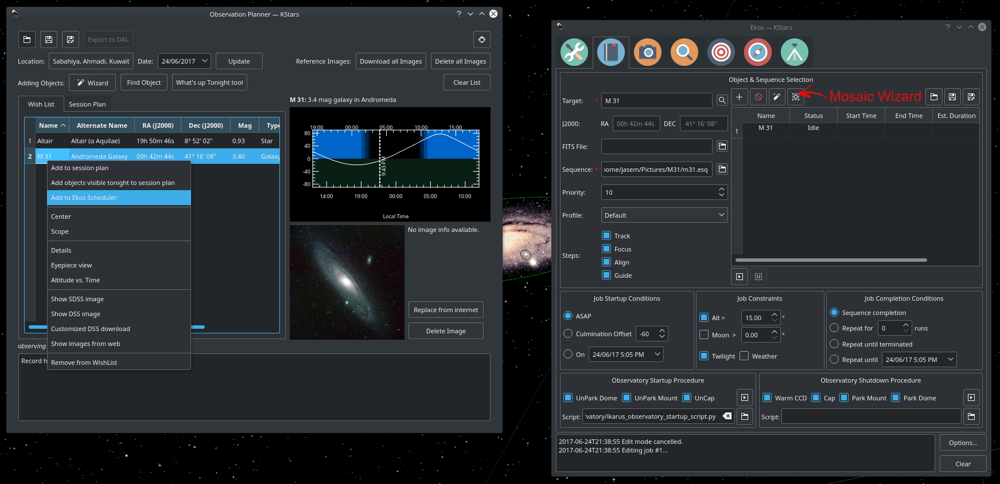
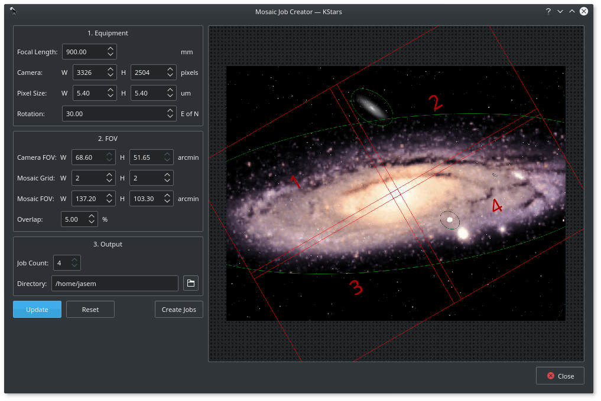

Scheduler

Introduction
Ekos Scheduler is an indispensable arsenal in building your robotic observatory. A Robotic observatory is an observatory composed of several subsystems that are orchestrated together to achieve a set of scientific objectives without human intervention. It is the only Ekos module that does not require Ekos to be started as it is utilized to start and stop Ekos. It is designed to be straightforward and intuitive. However, the scheduler should only be used after you mastered Ekos and knows all the quirks of your equipment. Since the complete process is automated, including focus, guiding, and meridian flip, all equipment should be thoroughly used with Ekos and all their parameters and settings adjusted to achieve the best result.
With Ekos, the user can utilize the powerful sequence queue to image batches of images for a particular target. In simple setups, the user is expected to focus the CCD, align the mount, frame the target, and start guiding before initiating the capture process. For more complex observatory environments, there are usually predefined custom procedures to be executed to prepare the observatory for imaging, and another set of procedures on shutdown. The user may plan to image one or more targets during the night and expects data to be ready by morning. In KStars, tools such as the Observation Planner and What's up Tonight help the user in selecting candidates for imaging. After selecting the desired candidates, the user can add them to the Ekos Scheduler list for evaluation. The user may also add the targets directly in Ekos scheduler or select a FITS file of a previous image.
Settings
Ekos Scheduler provides a simple interface to aid the user in setting the conditions and constraints required for an observation job. Each observation job is composed of the following:
- Target name and coordinates: Select target from the Find Dialog or Add it from Observation Planner. You can also enter a custom name.
- Optional FITS File: If a FITS file is specified, the astrometry solver shall solve the file and use the central RA/DEC as the target coordinates.
- Sequence file: The sequence file is constructed in the Ekos Capture Module. It contains the number of images to capture, filters, temperature settings, prefixes, download directory, etc.
- Priority: Set job priority in the range of 1 to 20 where 1 designates the highest priority and 20 the lowest priority. Priority is applied in calculating the weight used to select the next target to image.
- Profile: Select which equipment profile to utilize when starting Ekos. If Ekos & INDI are already started and online, this selection is ignored.
- Steps: The user selects which Ekos modules should be utilized in the observation job execution workflow.
- Startup Conditions: Conditions that must be met before the observation job is started. Currently, the user may select to start as soon as possible, ASAP, or when the target is near or past culmination, or at a specific time.
- Constraints: Constraints are conditions that must be met at all times during the observation job execution process. These include minimum target altitude, minimum moon separation, twilight observation, and weather monitoring.
- Completion Conditions: Conditions that trigger completion of the observation job. The default selection is to simply mark the observation job as complete once the sequence process is complete. Additional conditions enable the user to repeat the sequence process indefinitely or up until a specific time.
You must select the Target and Sequence before you can add a job to the Scheduler. When the scheduler starts, it evaluates all jobs in accord to the conditions and constraints specified and attempts to select the best job to execute. Selection of the job depends on a simple heuristic algorithm that scores each job given the conditions and constraints, each of which is weighted accordingly. If two targets have identical conditions and constraints, usually the higher priority target followed by higher altitude target is selected for execution. If no candidates are available at the current time, the scheduler goes into sleep mode and wakes up when the next job is ready for execution.

The description above only tackles the Data Acquisition stage of the observatory workflow. The overall procedure typically utilized in an observatory can be summarized in three primary stages:
- Startup
- Data Acquisition (including preprocessing and storage)
- Shutdown
Startup Procedure
Startup procedure is unique to each observatory but may include:
- Turning on power to equipment
- Running safety/sanity checks
- Checking weather conditions
- Turning off light
- Fan/Light control
- Unparking dome
- Unparking mount
- etc.
Ekos Scheduler only initiates the startup procedure once the startup time for the first observation job is close (default lead time is 5 minutes before startup time). Once the startup procedure is completed successfully, the scheduler picks the observation job target and starts the sequence process. If a startup script is specified, it shall be executed first.
Data Acquisition
Depending the on the user selection, the typical workflow proceeds as follows:
- Slew mount to target. If a FITS file was specified, it first solves the files and slew to the file coordinates.
- Auto-focus target. The autofocus process automatically selects the best star in the frame and runs the autofocus algorithm against it.
- Perform plate solving, sync mount, and slew to target coordinates.
- Perform post-alignment focusing since the frame might have moved during the plate solving process.
- Perform calibration and start auto-guiding: The calibration process automatically selects the best guide star, performs calibration, and starts the autoguide process.
- Load the sequence file in the Capture Module and start the imaging process.
Shutdown
Once the observation job is completed successfully, the scheduler selects the next target. If the next target scheduled time is not due yet, the mount is parked until the target is ready. Furthermore, if the next scheduled target is not due for a user-configurable time limit, the scheduler performs a preemptive shutdown to preserve resources and performs the startup procedure again when the target is due.
If an unrecoverable error occurs, the observatory initiates shutdown procedure. If there is a shutdown script, it will be executed last.
The following video demonstrates an earlier version of the scheduler, but the basic principles still apply today:
https://www.youtube.com/watch?v=v8vIXD1kois
Weather Monitoring
Another critical feature of any remotely operated robotic observatory is weather monitoring. For weather updates, Ekos relies on the selected INDI weather driver to continuously monitor the weather conditions. For simplicity sake, the weather conditions can be summed in three states:
- Ok: Weather conditions are clear and optimal for imaging.
- Warning: Weather conditions are not clear, seeing is subpar, or partially obstructed and not suitable for imaging. Any further imaging process is suspended until the weather improves. Warning weather status does not pose any danger to the observatory equipment so the observatory is kept operational. The exact behavior to take under Warning status can be configured.
- Alert: Weather conditions are detrimental to the observatory safety and shutdown must be initiated as soon as possible.
Aborted Job Management
Define what should happen when a job steps into an error or aborts:
- Don't re-schedule (None): Don't restart the job in case of an error or an abort.
- Re-schedule after all terminated (Queue): If a job gets aborted, the scheduler will only re-schedule it if when all jobs are finished or aborted. If this is the case, the scheduler re-schedules all aborted jobs and sleeps for the given delay.
- Re-schedule immediately (Immediate): As soon as a job gets aborted, the scheduler will re-schedule it and waits the given delay.
If the option for re-scheduling errors is selected, errors are handled like aborts. Otherwise, jobs that step into an error are never re-scheduled.
Startup & Shutdown Scripts
Due to the uniqueness of each observatory, Ekos enables the user to select startup and shutdown scripts. The scripts take care of any necessary procedures that must take place on startup and shutdown stages. On startup, Ekos executes the startup scripts and only proceeds to the remainder of the startup procedure (unpark dome/unpark mount) if the script completes successfully. Conversely, the shutdown procedure begins with parking the mount & dome before executing the shutdown script as the final procedure.
Startup and shutdown scripts can be written any language that can be executed on the local machine. It must return 0 to report success, any other exist value is considered an error indicator. The script's standard output is also directed to Ekos logger window. The following is an sample demo startup script in Python:
#!/usr/bin/env python
# -*- coding: utf-8 -*-
import os
import time
import sys
print "Turning on observatory equipment..."
sys.stdout.flush()
time.sleep(5)
print "Checking safety switches..."
sys.stdout.flush()
time.sleep(5)
print "All systems are GO"
sys.stdout.flush()
exit(0)
The startup and shutdown scripts must be executable in order for Ekos to invoke them (e.g. use chmod +x startup_script.py to mark the script as executable). Ekos Scheduler enables truly simple robotic operation without the need of any human intervention in any step of the process. Without human presence, it becomes increasingly critical to gracefully recover from failures in any stage of the observation run. Using Plasma notifications, the user can configure audible alarms and email notifications for the various events in the scheduler.
Mosaic Wizard

Hubble-like super wide field images of galaxies and nebulae are truly awe-inspiring, and while it takes great skills to obtain such images and process them; many notable names in the field of astrophotography employ gear that is not vastly different from yours or mine. I emphasize vastly because some do indeed have impressive equipment and dedicated observatories worth tens of the thousands of dollars. Nevertheless, many amateurs can obtain stellar wide-field images by combining smaller images into a single grand mosaic.
We are often limited by our camera+telescope Field of View (FOV). By increasing FOV by means of a focal reducer or a shorter tube, we gain a larger sky coverage at the expense of spatial resolution. At the same time, many attractive wide-field targets span multiple FOVs across the sky. Without any changes to your astrophotography gear, it is possible to create a super mosaic image stitched together from several smaller images. There are two major steps to accomplish a super mosaic image:
- Capture multiple images spanning the target with some overlap between images. The overlap is necessary to enable the processing software from aligning and joining the sub-images.
- Process the images and stitch them into a super mosaic image.
The 2nd step is handled by image processing applications such as PixInsight, among others, and will not be the topic of discussion here. The first step can be accomplished in Ekos Scheduler where it creates a mosaic suitable for your equipment and in accordance with the desired field of view. Not only Ekos creates the mosaic panels for your target, but it also constructs the corresponding observatory jobs required to capture all the images. This greatly facilitates the logistics of capturing many images with different filters and calibration frames across a wide area of the sky.
Before starting the Mosaic Job Creator in Ekos Scheduler, you need to select a target and a sequence file. The Sequence File contains all the information necessary to capture an image including exposure time, filters, temperature setting, etc. Start the Mosaic Job Creator by clicking on the icon next to the Find button in Ekos Module.
On first use, you need to enter your equipment settings including your telescope focal length in addition to camera's width, height, and pixel dimensions. Finally, you need to enter the rotation of the camera with respect to north or the position angle. If you don't know this value, start Ekos and slew to your desired target then use the Align module to solve the image and obtain the position angle.
Next, enter the desired number of horizontal and vertical panels (e.g. 2x2, 3x3, etc.) and then click Update. The target FOV shall be calculated given the number of panels and your camera's FOV and the mosaic overlap shall be displayed. By default, the percentage of the overlap among images is 5%, but you can change this value to your desired value. You can also move the complete mosaic structure around to fine tune the position of the mosaic panels. When satisfied, click Create Jobs and Ekos shall create an observation job and a corresponding customized sequence file for each panel. All the jobs shall be saved to an Ekos Scheduler List (.esl) file that you can load on any suitable observing night and it will pick off where you left. Before starting the Mosaic Job Creator, check that all the observation job conditions, constraints, and startup/shutdown procedures are as per your requirements since these settings shall be copied to all the jobs generated by the Mosaic tool.
With Ekos Scheduler, multi-night imaging is greatly facilitated and creating super mosaics has never been so easy.
Ekos Tutorials
Viewer
StellarMate is shipped with a VNC Server. This enables you to access the whole StellarMate desktop remotely. To connect to VNC, you can either use a Desktop/Mobile VNC Client, or simply via any browser.
The VNC address is: http://stellarmate_hostname:6080/vnc.html
Where stellarmate_hostname is the actual hostname (or IP address) of your unit and 6080 is the port. If you do not know the unit hostname, you can find the hostname in your StellarMate App.
You can use Real VNC which is available on all platforms to access stellarmate.
Once you access StellarMate, you can use it like any full-fledged computer. The default username is stellarmate and the default password is smate.